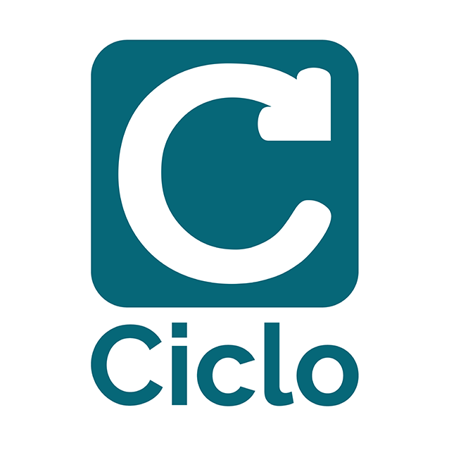
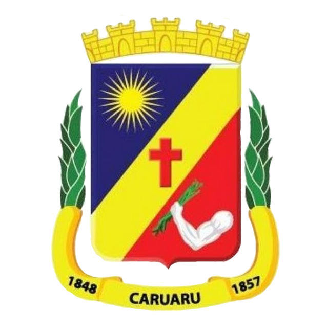

- 
- 
Universidade Federal de Pernambuco
Engenharia de Produção
2015 - atual
A UFPE é uma faculdade pública do estado de Pernambuco
e possui campus em Recife, Vitória e Caruaru.
O curso de engenharia de produção possui uma ampla área de atuaação e está
presente na implantação, operação, melhoria e manutenção de sistemas produtivos
integrados de bens ou serviços. Alguns exemplos de especialização são:
Logistica, Qualidade, Econômica, Pesquisa Operacional...
Grupo de Gestão Ambiental Avançada
ago/2017 - o momento
Este é um grupo de pesquisa e extensão da faculdade.
Ssou voluntário no projeto Amigos do Meio Ambiente, o qual leva educação
e gestão ambiental para escolas do município de Caruaru.
Participei da formação da comissão da A3P implementada no CAA
e também, através do GAMA, participei de projeto em parceria com
a secretaria de Serviços Públicos de Caruaru para georreferenciar e mapear
rotas de varrição e coleta da cidade
Ciclo Consultoria
Assessor de Negócios
jan/2019 - jun/2019
Atuei na prospecção de clientes, elaboração de diagnósticos e desenvolvimento
de propostas com soluções nas áreas de gestão da produção, processos, qualidade,
financeiro ou logística, conforme necessidade do cliente
Coordenador de Qualidade e Desenvolvimento
ago/2018 - dez/2018
Fiquei responsável por medir o NPS, monitorar a satisfação dos clientes
e acompanhar o desempenho da qualidade dos projetos em andamento
Bolsista na Secretaria de Serviços Públicos
mai/2019 - mai/2020
Realizei o mapeamento e georreferenciamento da cidade Caruaru,
como medida de atualização e apoio nos projetos
de varrição e coleta de resíduos.
Os resultados possibilitam otimização de rotas,
minimização de custos e formação de banco de dados